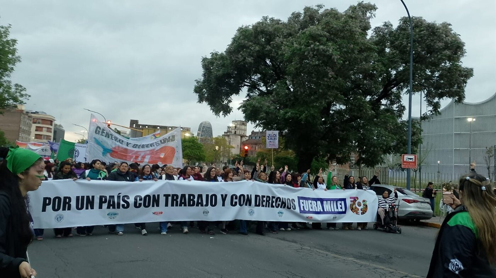
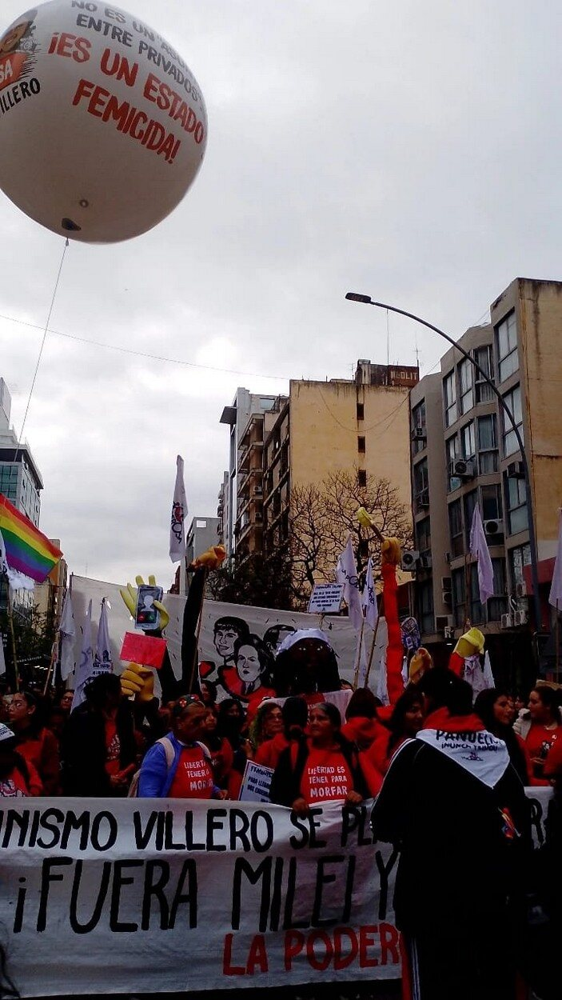
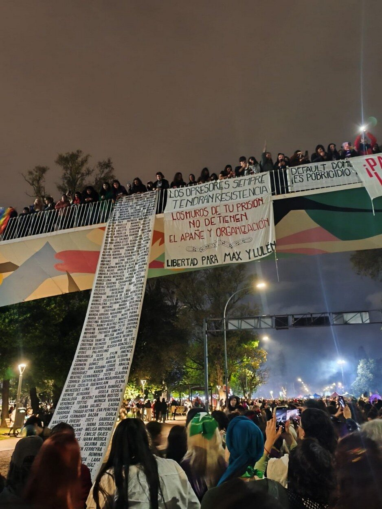

A pesar de todo, el Encuentro
Más de cien mil personas tomaron Córdoba durante el 39° Encuentro Plurinacional. Entre talleres, marchas, peñas, proyecciones y fiestas que se estiraron hasta la madrugada, la cultura puso la banda sonora de tres días de presencia feminista en la escena y las calles de Córdoba.

El sábado a las ocho de la mañana la ciudad todavía bostezaba cuando llegué a la avenida Poeta Lugones. La fila para acreditarse doblaba la esquina y ocupaba varias cuadras: mochilas, termos, banderas enrolladas bajo el brazo y mujeres que se saludaban como si se conocieran de toda la vida, aunque acabaran de verse por primera vez. Pagué la inscripción solidaria en una mesita improvisada y me colgué la credencial.
No era la primera vez que esto pasaba en esta ciudad. En 1987 Córdoba había recibido el segundo Encuentro Nacional de Mujeres, cuando las mesas discutían propuestas para reformar la Constitución, y en 2007 lo había vuelto a albergar. Casi cuarenta años después, la ciudad volvía a abrir sus escuelas para que durmieran mujeres que llegaban desde distintos puntos del país.
Mientras yo hacía la fila, en el Puente Centenario empezaba la ceremonia de apertura; desde ahí, una caminata fue sumando gente hasta el lugar del acto. A las diez, sobre Hipólito Yrigoyen al 300, frente al Paseo del Buen Pastor, empezó el acto inaugural. Cuando se leyó el documento, el nombre de Agostina Vega, la adolescente de 14 años desaparecida en mayo y luego asesinada en Córdoba, recorrió la avenida de punta a punta. A algunas se nos hizo un nudo en la garganta; a otras les brillaban los ojos y apretaban los gestos de la cara para contener el llanto. Una señora a mi lado apretó los puños. La comisión organizadora había preparado un texto duro contra el gobierno nacional y contra el provincial, a los que les reclamó respuestas y acciones para preservar la vida y los derechos de las mujeres y disidencias. La multitud acompañaba la lectura con aplausos que sonaban más a reclamo y enojo que a festejo.
Al mediodía, las viandas pasaban de mano en mano. Las habían cocinado cooperativas de la economía popular, igual que las remeras y las pecheras de las organizadoras. “Al Encuentro lo cuidamos todas”, decía la consigna que se repetía cada vez que alguien preguntaba por la seguridad.
Con el sándwich todavía en la mano crucé hasta el Centro Cultural UNC, sobre Obispo Trejo. A la una de la tarde, Sol Gómez y Chika Repiká llenaron la sala de candombe y tambores. Empecé a reconocer nuevas bandas integradas por mujeres de distintos puntos de nuestra provincia. Un rato después bajé por Hipólito Yrigoyen hasta el Palacio Ferreyra. En el bar del Museo Evita, Pilar Medina y Luci Delahye proponían un viaje imposible, de Atahualpa a Piaf, y lo hacían posible: la zamba y la chanson francesa sonaban, de pronto, como parientes cercanas. Por las ventanas de las escuelas del centro se escapaban las batucadas que calentaban motores: Batuque Disidente en la Alberdi y los talleres de Batuka en la Sarmiento.
A las tres me metí en el taller de arte, en una escuela del centro. El aula quedó chica enseguida: había bancos ocupados, gente sentada en el piso y otras asomadas desde el pasillo. Se habló de escenarios, de quién toca y quién mira, y de la necesidad de cumplir con el cupo de mujeres y disidencias en las grillas de los festivales musicales. Al día siguiente, varios talleres tuvieron que desdoblarse porque no paraban de llegar compañeras.
A las seis y media, la Plaza Político Cultural (las plazas Sobremonte e Intendencia convertidas en una sola) se llenó y cerca de las ocho llegó la marcha contra los travesticidios, transfemicidios y transhomicidios, que venía desde la General Paz. A una cuadra, en el bar Un Mundo Feliz, sobre Caseros, sonaban Fermenta, la “música rota” de Karmenn y las voces de Queerfonía Coral, bandas que nunca había escuchado.
Desde las nueve, la noche se partió en dos. En Rodríguez Peña al 400, el Sábado peñero del Pluri juntaba guitarras, bombos y pañuelos revoleados: pasaron Tekove Katu, Gata Flora, Camaleónicas, Coronadas en Venus, Negrita Kamba y les Kuyis, Folklore Andante y una lista que parecía no terminar. Pasada la medianoche volví a Tribunales I, donde la Festi Torta había convertido la explanada en pista de baile. La fiesta se estiró hasta las tres de la mañana. Cuando me fui, todavía quedaban rondas bailando sobre los escalones; el clima era feliz y tranquilo, y había rondas de extrañas charlando como si fueran amigas de toda la vida.
El domingo amaneció con cansancio en los pies y ansiedad en el pecho. Todo el mundo hablaba de lo mismo: la marcha. Pero antes, la ciudad se volvió sala de cine. A las doce y media, en el Museo Sobremonte, arrancó un ciclo de cortos hechos en Córdoba: Rizomas, Todo lo demás se borra, Lo que el fuego nos dejó, Jamás volveremos. Al mismo tiempo, en barrio Güemes se proyectaba Hijas de Nakba: memoria y resistencia; en La Piojera, el trabajo de las Referentas Comunitarias Matanceras; en el Caraffa, Jazmín. Elegir era resignar alguna otra cosa interesante que sucedía en simultáneo en otro punto de la ciudad.
Yo elegí el auditorio del Palacio Ferreyra. A la una y media se proyectó 22 veces Paola Tacacho, sobre la profesora tucumana asesinada después de haber denunciado una y otra vez a su acosador. La sala quedó en silencio largo rato cuando se encendieron las luces. Era imposible no pensar en Agostina. Al salir, desde el bar del mismo palacio llegaban los últimos acordes de Alta Manija Jem y Flor Straub, y la música fue casi un abrazo. Mientras tanto, a pocas cuadras, el Centro Cultural UNC presentaba el Observatorio de la Música en vivo y grabada de la comunidad LGBTQIAPN+ de Córdoba (una forma de contar, con datos, quién sube a los escenarios y quién se queda abajo), con Bren Coll e Ile Pez en vivo, y en Rodríguez Peña el festival de hip hop femenino y disidente hacía temblar los parlantes.
Más tarde salimos casi en bloque hacia Olmos y Maipú. A las 18.30 esa esquina ya era un río de personas. Adelante, una delegación de mujeres de pueblos preexistentes abría el camino con una ceremonia ancestral. Detrás, las batucadas marcaban el paso entre pañuelos verdes y violetas, glitter en las mejillas, carteles escritos a mano y abuelas que caminaban del brazo de sus nietas.


La marcha desembocó en la avenida Concepción de Arenales, donde esperaba el escenario de la Festi-Peña. Lo que había sido una protesta se volvió fiesta sin pedir permiso. Las bandas fueron pasando una tras otra, y en algún momento la avenida entera saltó al mismo tiempo; pensé que el asfalto no iba a aguantar. La peña siguió hasta las dos de la mañana: nadie parecía tener apuro por volver.

Que la cultura ocupara tanto lugar no fue un detalle menor. Durante tres días el Encuentro desplegó más de trescientas propuestas: candombe, folclore, hip hop, coros disidentes, batucadas, cortos cordobeses, documentales. Ese Observatorio que se había presentado al mediodía existe porque los escenarios todavía no son de todes; por unas horas, en Córdoba, lo fueron. El arte funcionó como otra forma de tomar la calle: no para pedir lugar, sino para ocuparlo. Más de cien mil personas, según la organización, habían demostrado que esa fuerza no se deja domar.
Las paredes también hablaban. La muraleada organizada por la comisión se había mezclado con pintadas espontáneas que acompañaron el paso de las columnas por el centro, Nueva Córdoba y Alberdi. Al día siguiente, algunos vecinos se quejaron; otras lo leyeron como la huella que deja una multitud cuando decide no dejar pasar desapercibidos las problemáticas sociales, las denuncias y los reclamos que los políticos ignoran.
El lunes a la mañana, ya con la voz gastada, volví a Concepción de Arenales para el acto de cierre. Se leyeron las conclusiones de 99 talleres, que no formaban un único documento sino un mosaico de voces. Después llegó el momento de elegir sede: la próxima será la Ciudad de Buenos Aires. Hubo gritos, abrazos y alguna lágrima. A las cinco de la tarde, la ceremonia de cierre en la apacheta malonera de la Ciudad Universitaria despidió el Encuentro.
Mientras caminaba de vuelta pensé en esa mañana del sábado, cuando las mujeres se saludaban como viejas conocidas. Tres días después ya lo eran. Cuarenta años atrás, en Buenos Aires, un puñado de mujeres se había juntado por primera vez; treinta y nueve encuentros después, la consigna seguía siendo la misma: insistir. Córdoba había prestado sus calles; nosotras le habíamos devuelto un ruido que va a tardar en apagarse.